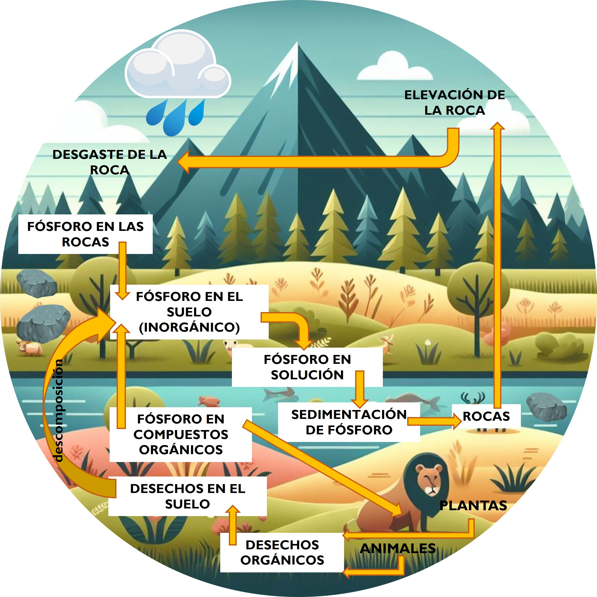
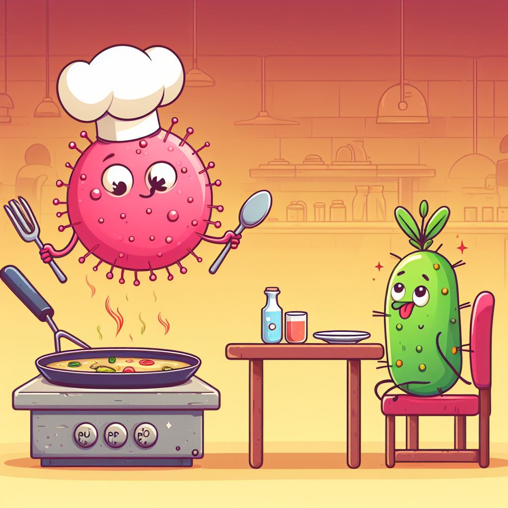
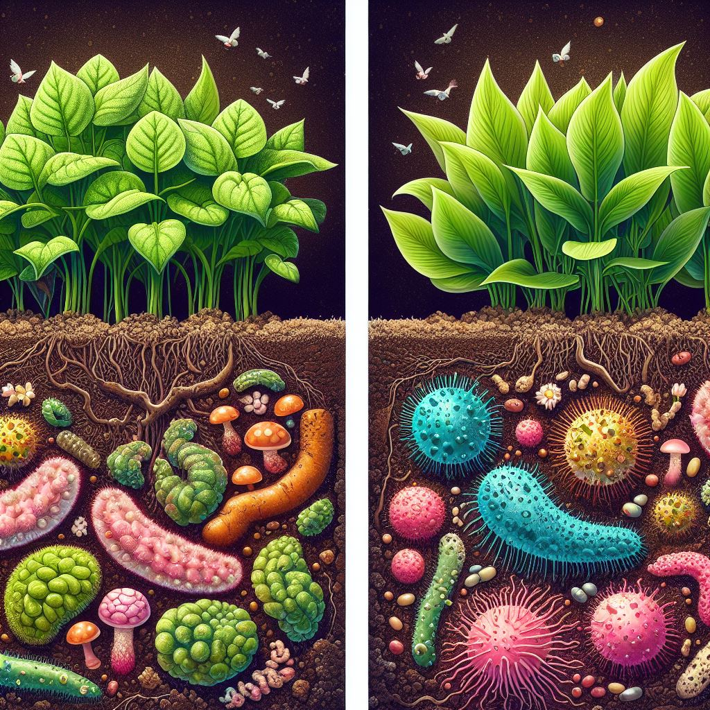

LA RECETA SECRETA DEL SUELO
Las abuelas son como magas, capaces de transformar simples ingredientes en auténticas obras maestras culinarias, de la misma manera las bacterias y los hongos transforman el fósforo de forma invisible a simple vista y obran maravillas en el suelo. Al igual que las abuelas transmiten sus recetas secretas de generación en generación, estas bacterias y hongos esconden en su diminuta estructura el conocimiento para liberar fósforo, un nutriente esencial para el crecimiento de las plantas. La labor en el suelo de estos organismos microscópicos es un regalo de la naturaleza, un misterio que solo se desvela para aquellos que observan más allá de lo evidente, y que, al igual que las recetas de las abuelas, nutre y enriquece el mundo que nos rodea de maneras que a menudo pasan desapercibidas.
Ingrediente gourmet
El suelo es el hogar de múltiples organismos, desde los más pequeños que solo se observan en el microscopio hasta grandes como los árboles. En él existen diferentes ingredientes que mantienen la vida de nuestro planeta en marcha, pues, la mayoría de la comida que disfrutamos, tanto las personas como los animales, proviene de plantas que crecen en esta tierra. Estas plantas que sembramos o bien crecen por si solas, necesitan alimentarse de elementos químicos especiales, para poder crecer fuertes y saludables.
Los tres ingredientes estrella son el nitrógeno, el fósforo y el potasio. ¡Son como la comida especial que les da a las plantas el poder para crecer y darnos deliciosos alimentos!. Sin embargo, el fósforo es uno de los ingredientes más valiosos, es como el ingrediente gourmet de la receta que todos quieren, pero que es difícil de alcanzar. Esto se debe a que tiene su origen en la explotación de minerales ricos en fósforo. Las apatitas o rocas fosfóricas cálcicas son sometidas a varios procesos de purificación y concentración para fabricar fertilizantes fosforados como el superfosfato triple (TSP) y el ácido fosfórico. Ambos utilizados ampliamente en la agricultura para fortalecer las plantas.
La alta demanda de este elemento va en camino a encontrarse con la próxima escasez de depósitos de roca fosfórica en el mundo. Estudios estiman que las reservas de esta roca no serán suficientes para las necesidades de la agricultura. El problema está en que las fuentes de fósforo no son renovables y no pueden elaborarse artificialmente. Por otro lado, las dosis de fósforo aplicadas al suelo que se utilizan comúnmente sobrepasan las necesidades reales, pues este a menudo se vuelve inmóvil y termina escondido o mezclado con otros elementos como el hierro, el calcio, el aluminio y el manganeso, lo que hace que las plantas no puedan tomarlo. Para resolver este desafío, existen varios organismos microscópicos que son capaces de separar el fósforo de esos otros elementos.

LA CREACIÓN ARTIFICIAL DE FÓSFORO ES IMPOSIBLE; SUS FUENTES SON LIMITADAS Y NO RENOVABLES
Los chefs microscópicos
En la fascinante tarea de nutrir a las plantas y hacer que obtengan este ingrediente especial, hace ya muchos años, se descubrió un grupo de bacterias y hongos con habilidades culinarias asombrosas. Como verdaderos chefs, estos microorganismos tienen la capacidad de transformar las mezclas de fósforo, utilizando diferentes técnicas para convertir este elemento en un plato apetitoso para las plantas. Algunas de estos famosos chefs a nivel mundial incluyen a especies de bacterias como Pseudomonas, Bacillus, Rhizobium, Agrobacterium, Micrococcus, Azotobacter, Azospirillum, Pantoea, Erwinia y especies de hongos como Penicillium bilaii y Aspergillus niger.
Estas cocineras bacterianas utilizan métodos ingeniosos, como la creación de sustancias especiales llamadas ácidos orgánicos, enzimas y metabolitos secundarios, que desencadenan la transformación de las mezclas químicas y liberan el fósforo. Todo este proceso se conoce como “solubilización de fósforo”, y es un proceso culinario complejo. Es interesante destacar que algunos de estos microbios son autosuficientes en su labor, mientras que otros necesitan trabajar en equipo con su comensal principal para lograrlo.

EL FÓSFORO EN EL SUELO PUEDE INMOVILIZARSE Y MEZCLARSE CON OTROS ELEMENTOS QUÍMICOS, IMPIDIENDO QUE LAS PLANTAS LO TOMEN
Comensales exigentes
Cuando hablamos de comensales exigentes, las plantas se llevan el primer puesto. Cuidar de ellas no se trata solo de darles agua y comida; sino que para que aprovechen su alimento, debe estar cocinado a la perfección. Algunas muy selectas prefieren esperar a que los expertos cocineros microbianos se encarguen de todo el proceso, mientras que otras eligen trabajar en equipo. De igual manera, en esta relación culinaria entre la cocina, la chef, la receta y el cliente, todos ganan. Las plantas requieren nutrientes que sean fáciles de digerir para crecer y prosperar. El fósforo es un ingrediente clave en su menú, ya que desempeña un papel vital en la división celular, la fotosíntesis, el desarrollo de las raíces y la utilización de carbohidratos. Además, este ayuda a formar moléculas fundamentales como el ADN. Es la maravilla detrás de la receta que permite a las plantas crecer, florecer y dar frutos en todo su esplendor.
HACE MÁS DE CIEN AÑOS, SE DESCUBRIÓ QUE ALGUNOS MICROBIOS PUEDEN AYUDAR A QUE EL FÓSFORO SE DISUELVA EN EL SUELO

Un banquete subterráneo
La receta secreta de solubilización de fósforo por las bacterias y los hongos es un festín escondido bajo tierra. En la mayoría de los suelos agrícolas, el fósforo se encuentra atrapado en formas que las plantas no pueden aprovechar, pero gracias a la acción de estos chefs microbianos, este ingrediente se convierte en algo delicioso para ellas. Estos microbios ofrecen una solución a largo plazo, reduciendo la necesidad de productos químicos en la agricultura y permitiendo la implementación de estrategias amigables con el medio ambiente. Con las reservas de fósforo disminuyendo y los precios de los fertilizantes fosfóricos en constante aumento, es vital buscar enfoques sostenibles para la fertilización. Es por lo que, en la Maestría en Ciencias Agropecuarias de la Universidad Veracruzana, se están llevando a cabo investigaciones para desarrollar alternativas económicas y respetuosas con el medio ambiente. Una de ellas implica el uso de biofertilizantes basados en organismos microscópicos, como los microorganismos solubilizadores de fósforo y tiene como objetivo aumentar los rendimientos de los cultivos sin dañar nuestro planeta. Este enfoque culinario de la agricultura nos muestra un camino hacia un banquete subterráneo más sabroso y sostenible.
*Maestría en Ciencias Agropecuarias de la Universidad Veracruzana. Xalapa. Correo: yudicintra95@gmail.com
**Instituto de Química. Universidad Veracruzana. Xalapa.Correo: rargumedo@uv.mx
***Facultad de Ciencias Agrícolas, Universidad Veracruzana. Xalapa. Correo: gabsanchez@uv.mx
Patiño-Torres, C. O., & Sanclemente-Reyes, O. E. (2014). Los microorganismos solubilizadores de fósforo (MSF): una alternativa biotecnológica para una agricultura sostenible. Entramado, 10(2), 288-297.
Restrepo-Correa, S. P., Pineda-Meneses, E. C., & Ríos-Osorio, L. A. (2017). Mecanismos de acción de hongos y bacterias empleados como biofertilizantes en suelos agrícolas: una revisión sistemática. Ciencia y Tecnología Agropecuaria, 18(2), 335-351.
Restrepo-Franco, G. M., Marulanda-Moreno, S., de la Fe-Pérez, Y., Díaz-de la Osa, A., Lucia-Baldani, V., & Hernández-Rodríguez, A. (2015). Bacterias solubilizadoras de fosfato y sus potencialidades de uso en la promoción del crecimiento de cultivos de importancia económica. Revista CENIC. Ciencias Biológicas, 46(1), 63-76.
AUTOR PRINCIPAL
Nombre: Yudith
Apellidos: Cintra Flores
Resumen curricular máximo de 5 líneas: Estudiante de la Maestría en Ciencias Agropecuarias, en la Universidad Veracruzana, Ingeniero Agrónomo por la Universidad Central “Marta Abreu” de las Villas, Cuba. Se ha desempeñado profesionalmente como docente universitaria en química orgánica y biológica. Actualmente su trabajo de investigación académica es sobre los microorganismos promotores del crecimiento en el cultivo de soya.
Dirección electrónica: yudicintra95@gmail.com
Entidad de Adscripción: Maestría en Ciencias Agropecuarias de la Universidad Veracruzana.
SEGUNDO AUTOR:
Nombre: Rosalba
Apellidos: Argumedo Delira
Resumen curricular máximo de 5 líneas: Investigador Nacional Nivel I. Profesor Investigador, Tiempo Completo, Titular C. Instituto de Química Aplicada (IQA). Patente: Método para recuperar oro y cobre de placas de circuito impreso con una solución iónica. Producción Científica: 15 Artículos científicos publicados en revistas internacionales, 7 Artículos científicos publicados en revistas nacionales, 2 Libros y 4 capítulos de libro.
Dirección electrónica: rargumedo@uv.mx
Entidad de Adscripción: Instituto de Química. Universidad Veracruzana
TERCER AUTOR:
Nombre: Gabriela
Apellidos: Sánchez Viveros
Resumen curricular máximo de 5 líneas:Ingeniero agrónomo por la Universidad Veracruzana. Maestría y doctorando en Ciencias por el Colegio de Postgraduados con especialidad en Microbiología del suelo. Integrante del SNI del CONAHCyT, nivel 1. Académico tiempo completo en la Facultad de Ciencias Agrícolas. Línea de generación y aplicación del conocimiento sobre “Biotecnologías microbianas aplicadas en la recuperación de ambientes contaminados y sistemas agroproductivos”.
Dirección electrónica: gabsanchez@uv.mx
Entidad de Adscripción: Facultad de Ciencias Agrícolas, Universidad Veracruzana.